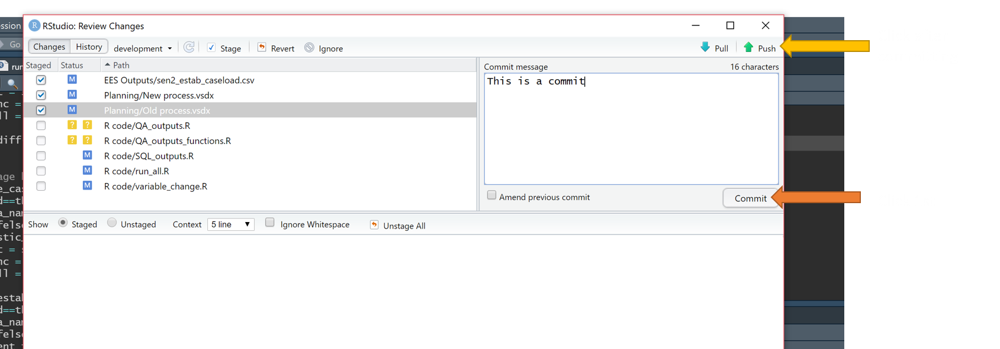
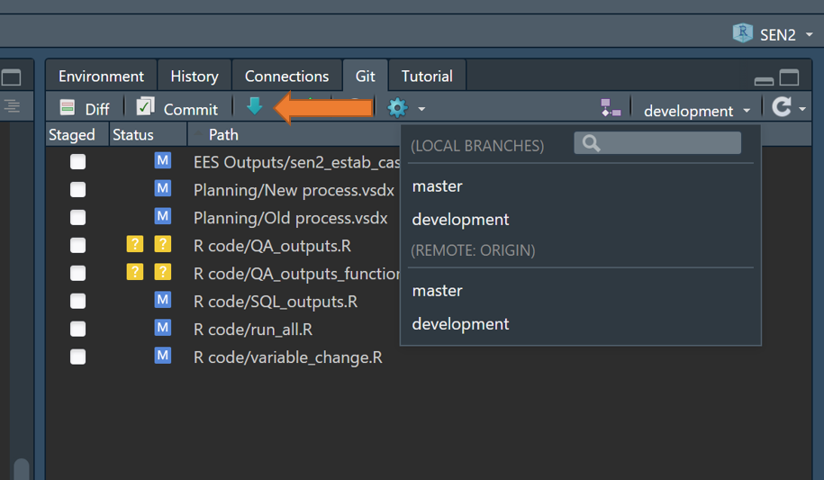
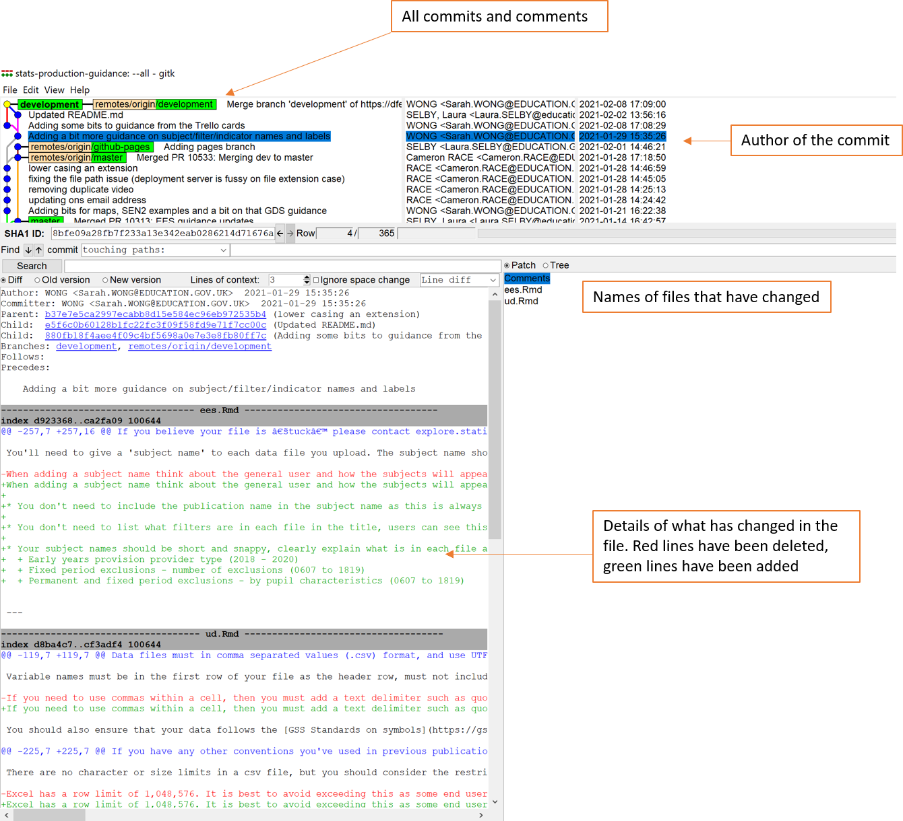

Tools and learning resources
A collection of useful learning resources, and information on the recommended tools to get you started.
Introduction
As statistics producers we require a variety of tools to be able to process our data, and as you probably know, there are a wealth of them out there to process and analyse data.
As a part of developing resources to help us integrate the principle of RAP into our processes, it is important that we set a clear direction on what tools we will be actively supporting teams to use. Below are the recommended tools that will give us the most power to do what we need, and are the best supported with resources for developing the necessary skills to use them. These have large user communities in DfE, and are already working in our current IT setup.
For best practice when using software and coding in our process, see our guidance on RAP the DfE Good Code Practice guide.
Recommended tools
Teams are welcome to use whatever tools they want, as long as the processes involved meet the principles of RAP.
Database management - Microsoft SQL Server Management Studio and SQL (Structured Query Language)
- SQL servers are where most of DfE’s data is held, and with a wide usage community already in place and a language that is pleasantly intuitive and easy to use, it is an obvious choice for this task. The majority of us already have Microsoft SQL Server Management Studio (MSSMS) downloaded through the software centre. Moreover, SQL allows us to do enough manipulation and analysis to production some of our publications. Note that SQL is the language, and MSSMS is the environment that we mostly use to write and run it in DfE.
Data manipulation and analysis - RStudio and R
- We recommend to use R where SQL can’t do everything that you need in terms of manipulation and analysis. It is also an extremely powerful tool to use when creating data visualisations. R already has a strong community within DfE, it can pull in data stored in SQL servers and integrate SQL queries, as well as being a leading language in the world of analysis and data. R (the language), RStudio (the best environment to write and run R), and RTools (a useful package), are all available from the software centre.
Version control - Azure DevOps and Git
- Version control can be implemented through having a sensible folder structure and clear file naming conventions, however we do recommend that in the longer term we move towards to using Git to help us version control the code that we write. It is widely used across DfE and integrates neatly with our use of Azure DevOps, as well as being the current leading version control software in the world of coding with over 87% of 74,298 stack overflow users using it. To highlight the scale of this dominance, Subversion came in in second place at a paltry 16%. As far as making repositories publicly accessible is concerned we can easily mirror our repositories in the DfE Analytical Services area on GitHub.
Learning these tools
Software language – the literal language of the code you write, this defines the syntax and commands to use.
Integrated development environment (IDE) – a software application within which you can actively develop and execute code.
Most software will have a language and a commonly used IDE. If you are looking for an all-purpose IDE for editing and running code, then we would recommend installing Visual Studio Code from the software centre.
As a general approach, many people find it useful to use the resources below to get to grips with the basics of the languages first and get their head around the concepts of writing code, and what it is we can do with it. Some of the guides below for R are particularly good for walking you through this step by step.
If you’re overwhelmed by the list of resources below, feel free to get in touch with us so that we can advise the most suitable ones for you look to at.
Getting a friend or colleague to show us around the environment on our own machine such as MSSMS or RStudio, and how to access real data using the code is a critical step. It’s important not to overlook the practical element of how you use these tools on your own machine with your own data, as you will need to be using these tools in your day to day processes to properly start learning. It’s like driving a car, you can have as many theory lessons as you want, but the true learning happens when you’re left alone in full control of the machine!
We are always on the look out for resources that will help you to have the skills needed to incorporate the principles of RAP into improving your own processes. There will be many more just a google away, and genuinely, Google is the single most powerful learning resource out there, whether it leads you to a StackOverflow answer to your problem, or to an online training course, it will have your needs covered. We appreciate that it can be daunting and overwhelming at first though, which is why we’re pooling together links to particularly relevant resources on this page. Let us know if there’s any you’d like to see added!
General resources
Google - while it can be overwhelming and daunting at first, do not be afraid to type your questions into a search engine, even the most experienced professionals spend a lot of time on forums such as Stack Overflow.
The DfE Data Science resource tool, in here you can access a plethora of materials, from coffee and coding talks to online guidebooks.
ESFA have also produced a useful guide to using R and Git. This takes you in from the beginning, teaching you how to use RStudio and later on even includes some information on Shiny apps and more complex topics. For more information on RShiny apps, I’d recommended joining the R Shiny Developers teams group.
Connor Quinn has compiled a list of resources for Data Engineering. There’s a good amount of overlap with this page, though for more advanced SQL and database resources this is a fantastic place to go.
There is also a handy general data science resources list, that includes plenty of open-source resources for R and SQL, with Python, Git, and shell included in there too.
If the above list doesn’t have something for you then check out the resources in the awesome lists and awesome R, which contain more resources than you could shake a stick at.
DataCamp has a multitude of courses across R, SQL, Git and other languages. Many of the courses are free to start, and if you email gss.capability@statistics.gov.uk, they can guide you through the process of getting access to one of their premium subscriptions for a few weeks, which allows you to access the rest of the courses. Datacamp as a company are often morally objected to, and are widely vetoed across the data science community.
Earlier this year we had our Data Science week, which contained a wide variety of talks across Data Science within the department, everything was recorded and can be found on the associated microsoft stream page.
There is a wealth of information on the DfE Quality Assurance wiki, and while much of this is aimed at areas that use modelling, plenty of it is applicable to how we QA our data too.
Finally, if after reading through this website you still need any convincing as to why R and Git are worth your time, then have a look at the Boons of R and Git by David Sands.
Getting started
The Statistics Development Team invites teams to take part in our partnership programme. The programme can help individuals with:
- Using a relevant project to develop new coding skills and improving current confidence
- Streamlining data production processes to free up time for secondary analysis
- Improving the presentation and consistency of statistical products for users
The partnership programme is a great opportunity to work with the Statistics Development Team, using protected time to work on things that are otherwise usually deprioritised. We understand the pressures of BAU work mean that development time is often hard fit in, but this programme offers designated support and clear project planning from our team so that these improvements can be achieved. Putting in the work at these early stages will save more time and resource in the long run, and we are keen to support as many teams as possible to free up time in the future for even more interesting analysis.
The Ask
We ask that you/a designated member of your team are given protected time to work on a specific project, with support from us. Some examples of previous projects we have helped support are:
- The automation of the SEN2 release, creating automated QA reports and all EES outputs at the click of a button.
- The automation of the HoP rolling brief document, removing arduous tasks like copying, pasting, and formatting in Word.
The time commitment of the programme will be dependent on the size of the work and what level of support is required. Please get in touch with us if you are interested and would like to discuss further.
SQL
What is it
SQL or Structured Query Language is a programming language used to talk to relational database management systems.
What is it for
SQL provides us with a language primarily for querying databases to extract data, though it is also capable of some basic data processing and analysis.
How to get it
Download SSMS from the DfE software centre, talk to your team about getting access to the appropriate SQL servers and databases where the data you need to access is held and start writing SQL queries.
Best place to start
Andy Brook’s excellent Introduction to SQL session, giving a visual overview of the basics of querying with SQL:
The follow up intermediate session can be found below.
Other resources
This tutorial script by Tom Franklin is a particularly good starting point as it includes the data you are manipulating, so you don’t need to worry about connecting to or getting access to specific databases before you can then run anything. Simply open up Microsoft SQL Server Management Studio (downloadable through the software centre), and start playing with that query.
Avision Ho created the this SQL training course.
The Khan academy offers a great free introduction to the basics of SQL.
It’s also worth taking a look at Jon Holman’s presentation on ‘good to know’ SQL functions.
MoJ have produced a SQL from square one guide to using CTE’s in SQL as well as running SQL from RStudio
Andy’s follow up intermediate SQL session, covering more advanced features of SQL:
Tips for using SQL
Setting up a SQL area
More information to follow.
Giving/getting access
To gain access to a SQL database, you must have written confirmation from the database owner specifying whether your access is read-only or both read and write.
If the area you require access to is in the T1PRMDRSQL,55842 SQL server, contact the PDR team with your permission attached, stating the name of the database you want access to.
If the area is in any other server, raise a request through the central IT service portal under “non-standard” > “any other request”. In your request make sure you attach the written confirmation and specify:
- The server name
- The database name
- Whether it’s read or write access you need
Copying data from the iStore
More information to follow.
SQL best practice
Here are some tips to follow best practice in your SQL code, making it easier to read and pick up if another person is running your code.
- Avoid any trailing whitespace
- Always capitalize SQL keywords (e.g., SELECT or AS)
- Variable names should be in snake case - lower case words separated by underscores (e.g. pupil_age instead of PupilAge)
- Comments should go near the top of your query, or at least near the closest SELECT
- Try to only comment on things that aren’t obvious about the query (e.g. why hardcoded filters are used, how to update them)
- Where possible, use Common Table Expressions (CTEs) early and often, and name them descriptively (e.g. “pupil_age_table” rather than “p”)
R
What is it
R is an open-source programming language specifically aimed at statisticians and data analysts.
What is it for
R can be used for almost anything you can think of, notably data analysis, data visualisation, and creating reports and dashboards. It can also be used to extract data from SQL databases and run SQL queries.
How to get it
Download R (language), RStudio (IDE) and RTools (helpful extension) from the DfE software centre.
Best places to start
The DfE R training guide is a great starting point to guide you through how to get started using R and RStudio.
As an alternative, with a number of options for beginners to R, RStudio Education provide a variety of materials to suit different learning styles.
Best syntax lookup
- If you want a useful guide for R syntax or functions, then look no further than the R cheat sheets, these can be an invaluable point of reference. Below we’ve included a few particularly relevant ones:
- Introduction to the RStudio environment
- Base R
- Regex
- RMarkdown
- RShiny
- Manipulating data with dplyr
- String manipulation with stringr
- Visualisations with the ggplot2 package
- Apply functions with purrr
- Finally, importing data into R
Other resources
There is also the DfE Analytics Academy, who host an online R training course.
Here is another free introduction to R course by Quantargo.
R Markdown: The Definitive Guide, hopefully this one should be relatively self-explanatory!
Data science in education provides a heavily detailed guide for beginners in R learning to process data, with some well written out sections that may be of interest.
Handy guide to collapsing and sectioning R code for easy navigation in RStudio.
Here are 5 handy tidyverse functions that you should know if you’re using R to process data. Number two is especially useful for those processing wide data into a tidy format!
MoJ have produced guidance on writing functions in R
If you’re wondering how best to make the jump to R from Excel and SQL, take a look at this coffee and coding presention by David Sands.
Malcolm Barrett has done some slides on dplyr, ggplot2, and using purrr which may be useful if you’re looking at learning more about any of those packages.
Also check out the janitor package, it has some particularly powerful functions that are worth a look for tidying and QA’ing data.
Excel functions in R
R can do everything you do in excel, but takes out the human error. The reference table below shows how you would carry out popular Excel commands in R.
R comes in with a built-in dataset called “iris”. We’ll use this for all examples so you can recreate them in your local area.
REMEMBER: R is case sensitive, so all references to column names/entries need to be as-is in the dataset you are looking at. Functions exist that can translate all your columns to lower or snake case for ease!
| Common Excel Task | Example with iris | How to do in R with dplyr |
|---|---|---|
| Select specific columns | Select only species and petal length | iris %>% select(Species, Petal.Length) |
| List unique entries in field (column) | Find the unique entries for the “Species” column in iris | iris %>% select(Species) %>% distinct() |
| Filter/select based on criteria | Filter for sepal length >4 and sepal width <2.5, but NOT “versicolor” species | iris %>% filter(Sepal.Length > 4 & Sepal.Width <2.5 & Species != "versicolor") |
| Filter for multiple criteria in same column | Filter for all “setosa” and “versicolor” species | iris %>% filter(Species %in% c("setosa", "versicolor") |
| If else with OR | Create new column called “size_group” based on length or width of petal | iris %>% mutate(size_group =if_else( Petal.Length > 4 | Petal.Width >1.5, "Large", "Small")) |
| Multiple if else | Create new column called “flower_price” based on species and petal length | iris %>% mutate(flower_price = case_when( Species == "setosa" & Petal.Length > 1.5 ~"top band",Species == "versicolor" & Petal.Length < 4 ~"low_band",TRUE ~ "mid_band")) |
| COUNTIF | Count the number of species if they have a petal length >1.5 | iris %>% filter(Petal.Length > 1.5 ) %>%group_by(Species) %>% count() |
| SUMIF | Sum petal width of species if sepal width <3 | iris %>% filter(Sepal.Width <3) %>%group_by(Species) %>%summarise(Petal.Width = sum(Petal.Width)) |
| VLOOKUP | Lookup to a table called “lookup” | iris %>% left_join(lookup, by.x="Species", by.y ="plant_species") |
| Order by | Order dataset by descending petal width | iris %>% arrange(desc(Petal.Width)) |
Quick fixes
A selection of handy bits of code and workarounds for common issues.
renv::restore()
Sometimes renv::restore() can fail, and when in specific renv-controlled projects install.packages() will fail saying that packages aren’t available even when they clearly are. This seems to be an issue that can be worked around by specifying the renv library as the install location. It’s a bit of a fudge, though these lines are helpful to get the packages from the renv lockfile installed and you running the project when needed:
myPath <- .libPaths()[1]
forceInstall <- function(pkg, path) {
missing <- suppressWarnings(eval(parse(text= paste0("!require(",pkg,")"))))
if(missing == FALSE){
message(pkg, " is already installed.")
} else{
install.packages(pkg, lib = path)
}
}
forceInstall("jsonlite", myPath)
renvPackages <- names(jsonlite::fromJSON("renv.lock", flatten = TRUE)$Packages)
invisible(lapply(renvPackages, forceInstall, path = myPath))More manual equivalent to use for specific packages:
.libPaths() # note down output 1, and reuse in the lib argument of install.packages() as below
install.packages("rmarkdown", lib = "C:/Users/swong/OneDrive - Department for Education/Documents/stats-production-guidance/renv/library/R-4.0/x86_64-w64-mingw32")
Specifying a version of R to use
This can be done most easily by navigating in RStudio through Tools > Global options > General > Basic > R version (change). It’s likely you’ll need to restart RStudio for the changes to take affect.
Mutating columns
Where you have a simple if else scenario use mutate(col = if_else(expression, TRUE, FALSE), rather than mutate(col = case_when(expression ~ TRUE, TRUE ~FALSE) it’s both quicker and easier on the eye!
Rounding
The base R function of round() rounds 5’s downwards. To round them upwards you can create a custom function like the one below:
roundFiveUp <- function(x, n){
z = abs(x)*10^n
z = z + 0.5 + sqrt(.Machine$double.eps)
z = trunc(z)
z = z/10^n
positiveNegative = sign(x)
return(z * positiveNegative)
}Passing variables as arguments
This can be worked around by using a combination of eval() and parse(), as shown in the below function:
showFilterLevels <- function(data, meta) {
filters <- meta %>%
filter(col_type == "Filter") %>%
pull(col_name)
levelsTable <- function(filter) {
return(eval(parse(text = paste0("data %>% select(", filter, ") %>% distinct()"))))
}
output <- lapply(filters, levelsTable)
return(output)
}Reverse additive filters
You might want to filter your dataset based on multiple negative conditions. Normally to filter on multiple conditions, you would use filter(condition1 & condition2). The “filter” function does not work well with negative conditions (i.e. filtering for cases where condition 1 and condition 2 are not met). Instead, you can use subset(!(condition1 & condition2).
File locations
Struggling to get files to talk to one another, or get code to find and use another R script? Use here::here() and marvel at it’s wondrous ability to magic away issues.
Interweaving vectors
There’s an easy way to interweave multiple vectors into one single vector using c(rbind()). The example below shows two vectors, but you can have even more if you need.
#Two vectors, x and y
x <- 1:3
y <- 4:6
#Run code to interweave
c(rbind(x, y))
#Output below
# [1] 1 4 2 5 3 6Remember the outline
In RStudio you can greatly increase the navigability of your code by taking advantage of outlines. More information on folding and navigating outlines in RStudio can be found online, though when using rmarkdown reports, remember to use names first, such as ## Rows that aren't matching: r nrow(joined %>% filter(matching == FALSE)), rather than having the R code first, so that they are easy to discern in the outline.
Making charts interactive
When pulling ggplot charts into RMarkdown reports, you can consider making them even more user-friendly and interactive with plotly. Further information on how to make your charts interactive with plotly can be found online.
#Simple ggplot chart called "p"
p <- ggplot(dat, aes(x=xvar, y=yvar)) +
geom_point(shape=1) # Use hollow circles
#Apply ggplotly() to it to make it interactive
fig <- ggplotly(p)
Updating packages in renv
To update a single package run:
renv::update("dplyr")
To update all packages run:
renv::update()
Installing old package versions in renv
This is surprisingly neat to do. Let’s say you wanted to roll back to version 1.0.2 of dplyr, you would run the following:
renv::install("dplyr@1.0.2")
Git
What is it
It is a version control software. It is by far the best of its kind and is widely used by software developers and data scientists.
What is it for
Git is a version control software that tracks changes to files within a folder that you assign Git to track. It works best with plain text files such as flat data files, code scripts and markdown documents. These folders are known as repositories and can be held and managed securely in a central online place such as GitHub (best for public), GitLab (can be good for either public or private) and Azure DevOps (best for private).
How to get it
Download it from the Git website.
Git doesn’t have an IDE, instead it will either integrate with your current IDE such as RStudio or Visual Studio Code, or run in the command line.
Best places to start
If you’re new to Git and are unsure of what it does, then take a look through these Git for humans slides
Gooey Git by David Sands, provides a very neat overview of using git with R.
Other resources
Avison Ho and Linda Bennett gave this coffee and coding presentation on version controlling SQL with Git.
Happy Git is a useful (though detailed) guide to setting up and using git.
Adam Robinson and Zach Waller have produced guidance for how to use git in Azure DevOps (formally VSTS), which gives a detailed guide on how to use version control software in DfE analysis.
While also mentioned above as a resource for learning R, chapter 6 of ESFA’s guide to R and Git is also worth looking at for Git alone.
Microsoft have produced documentation on using Git within AzureDevOps.
For those wanting to go deeper into understand the variety of git commands and what they do, there is a great online visual resource.
We also have a number of helpful sections on using git in practice at the end of our RAP page.
How to use Git
Branches
When you create a git project, it will automatically create a “master” branch for you. This is where code that has been QAd and you are happy with should sit.
- It is good practice to have at least one other branch, we tend to call it “development”. This is the branch where you will be doing most of your work. To open a new branch, navigate to “branches” and click on the blue box highlighted below

Having two separate branches means that if anything goes wrong in the “development” branch, everything can be reverted to the last QAd version in “master”, without having to lose too much work.
When working on your project, make sure that you are in the “development” branch. You can check this by navigating to the “Git” tab in RStudio as demonstrated below.

Commits
Once you are happy with changes and want them to be in the latest “development” version of the repository for all of your team to see, you can push “commits” up.
- When you make a change to a file, this will pop up in the “Git” window of your R console. Select the files you want to commit by ticking the “staged” box next to them.

- This will bring up a new window. Add a comment describing your additions/changes, and click commit. You will see all the staged files disappear. Then click “Push” to push the committed files up to the online repository for all to use.

- When another member of your team makes a commit and you want to pull this into your local area to check and work off the latest version, click on the blue “pull” button.

Pull requests
When you have got to a place with the code and your committed changes where you are happy for it to be QAd, you can open a pull request. This means that the “development” branch will be merged into “master”, and will become the latest QAd version of the production code that the team falls back on.
Navigate to “Pull Requests” in the “Repos” tab of Azure DevOps and click the blue “New pull request” button.
This will take you to a new window. Here, you can add:
- Title, tell your team what has changed
- Description, tell your reviewer what they should check
- Reviewers, add multiple if needed.
As a reviewer, to approve a pull request, follow the link in your email and click “approve” in the blue box. When all reviewers are happy for this to be the new master branch, click “complete”.
Creating pull requests in GitHub follows a broadly similar process and should be intuitive from the above steps for Azure DevOps.
Cherry picking
If you want to cherry pick specific commits for PR, you can do this by cherry picking the commits you want to use, and creatng a new branch that has only those new commits that you want.
To start off you’ll need to identify the commits you want. In the terminal, run git log --oneline to get a log of commits for your current branch, use git log --online BRANCHNAME to specific the branch for the log. This gives a list of commit hashes and messages (stackoverflow response defining git hashes and commmit ID’s). You can press enter to get more commits, or q to quit
Then go to the branch you want the commit to appear on and cherry pick your commits. Often, if this is to hop around something on a development to master pr, you would create a second development branch, cherry pick commits to there, and then PR that to master and delete the branch after merging.
On the branch you want to PR (i.e. your copy of a development branch purely for merging only cherry picked commits) run git cherry-pick COMMITHASH to add the specified commit, or git cherry-pick HASH1^..HASH4 for a specified list of commits (inclusive).
Happy days!
Tagging release versions
It can be useful to tag specific commits or releases at key points in time. For us a common example will be each publication cycle, to tag the version of the code used to process data for a particular release or amendment.
Guidance on how to tag releases using git can be found on the draft version of the BPI code guidance
Merging a branch into another one
For example if you are working on a feature branch, and want to merge the latest changes to the master branch to your feature branch.
Start off by checking out your desired target branch - git checkout mybranch. Then merge in the branch you want (e.g. master) - git merge master.
Visualising your tree
You can use gitk --all to visualise a tree of all previous commits up to this point.

Getting commit IDs
Commit IDs are the way Git identifies unique commits. They’re really helpful if you ever need to revert back to a previous commit if you’ve made a mistake.
There are lots of different ways to find out commit IDs:
Visit the repo in Azure Devops and go to the commit of interest. At the top of the page there is a commit ID you can copy.
Navigate to the repo in your file explorer, then open up Git Bash and type
git log --pretty=format:"%h - %an, %ar : %
OR
git log --pretty=oneline
There are a number of customisable versions of this, more information is available on the Git website.
Reverting a commit
Made a mistake and need to revert? No problem!
- Navigate to the repo in your file explorer, then open up Git Bash and type :
git revert [PASTE COMMIT ID HERE]
This opens up a window that asks you to write a commit message. YOu can skip this step as it automatically writes a revert message for you. Enter
:wqwhich quits the writer window.You can now push these changes to Azure Devops by entering
git pushinto the git window
Further notes
For more information on how to use these tools in your production processes, please see the production processes page.
This is by no means a finite list of resources, we want this to be added to and for it to develop over time - if you have any resources that you think could be added then we’d love to hear from you.
If you are stuck at all, have any questions, want to find a resource, or even just want a second pair of eyes to double check something, contact us using the envelope in the top right corner and we’ll be more than happy to help.